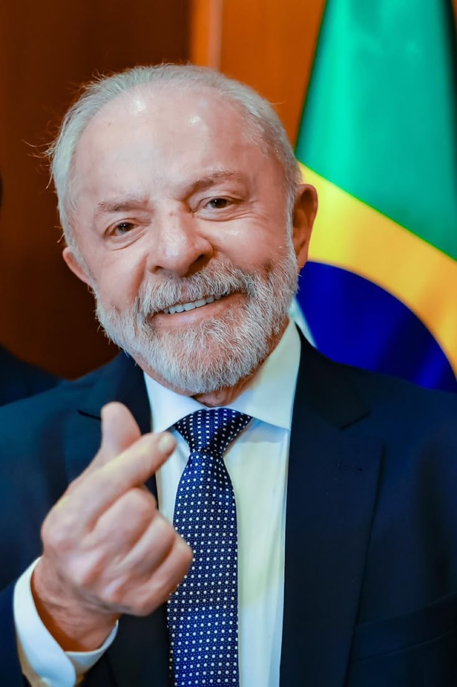
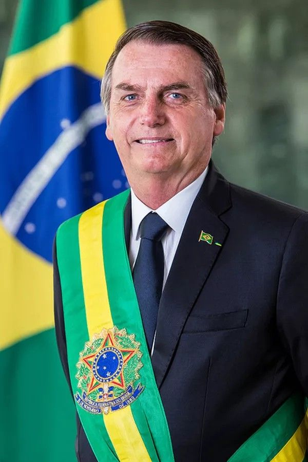
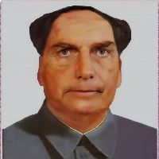
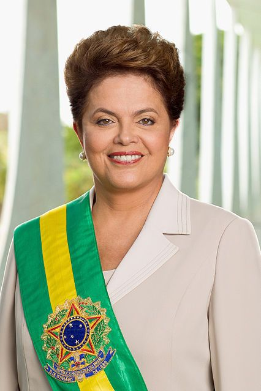
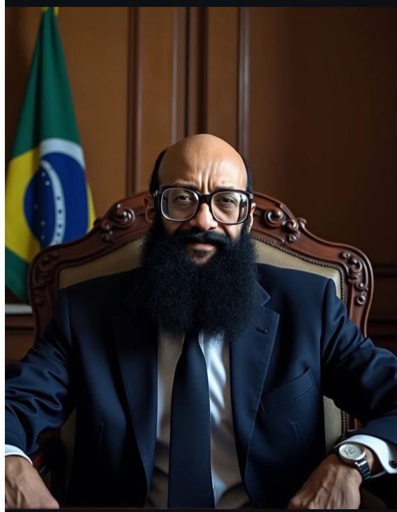
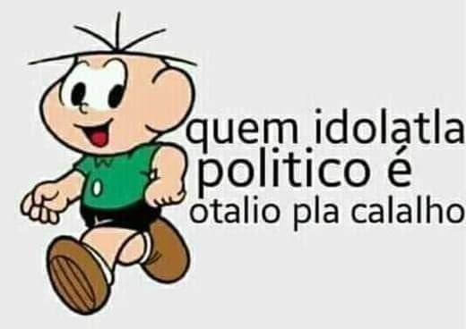

Escândalos em destaque
1. Operação Lava Jato (2014)
O que foi: Considerada uma das maiores investigações de corrupção do mundo, revelou um gigantesco esquema de propinas e superfaturamento de contratos na estatal Petrobras.Como funcionava: Grandes empreiteiras formavam cartéis para fraudar licitações da estatal. Parte do dinheiro dos contratos superfaturados era destinada ao pagamento de propinas para diretores da empresa, partidos e políticos.Impacto: Estimou-se que o esquema movimentou e desviou dezenas de bilhões de reais.
2. Mensalão (2005)O que foi
esquema de compra de votos de parlamentares que abalou o primeiro mandato do governo de Luiz Inácio Lula da Silva.Como funcionava: Verbas públicas (vistas, por exemplo, em contratos publicitários de estatais e bancos) eram desviadas para repassar uma mesada ("mensalão") a deputados em troca de apoio e votos a favor dos projetos de interesse do Governo Federal no Congresso.Impacto: Resultou no julgamento histórico pelo STF que condenou figuras do alto escalão político e empresarial.3. Escândalo dos Anões do Orçamento (1993)O que foi
Fraude na Comissão de Orçamento do Congresso Nacional envolvendo parlamentares de baixo clero (apelidados de "anões" por não pertencerem à liderança principal dos grandes partidos).Como funcionava: Os políticos manipulavam emendas parlamentares para direcionar verbas públicas a entidades fantasmas ou a prefeituras associadas, de onde o dinheiro era desviado através de empreiteiras.
4. Caso Banestado (Anos 1990)O que foi
Um megaesquema de evasão de divisas e lavagem de dinheiro por meio do Banco do Estado do Paraná (Banestado).Como funcionava: Bilhões de dólares foram enviados ilegalmente para o exterior — principalmente para contas em paraísos fiscais — utilizando-se de contas de passagem conhecidas como "contas CC5".
5. Escândalo dos Precatórios e o caso TRT-SP (Anos 1990)O que foi
Desvios milionários na construção do prédio do Tribunal Regional do Trabalho de São Paulo.Como funcionava: O esquema envolveu o superfaturamento da obra pública articulado pelo juiz Nicolau dos Santos Neto (conhecido como "Juiz Lalau") e pelo ex-senador Luiz Estevão, resultando no desvio de grande parte do orçamento enviado para a construção.
6. Orçamento Secreto (2020–2022)O que foi
Mecanismo bilionário de alocação de verbas federais utilizado durante a gestão de Jair Bolsonaro para garantir apoio político no Congresso.Como funcionava: Através das chamadas "emendas de relator" (RP9), bilhões de reais eram distribuídos a parlamentares aliados para obras em suas bases eleitorais, porém sem transparência ou critérios técnicos. O esquema abriu margem para fraudes locais, como o faturamento de exames e procedimentos médicos inexistentes em pequenas cidades
Sobre
Era Dilma (O Gerador de Lero-Lero)
O site focava nas falas confusas e nos discursos sobre "saudar a mandioca" ou "estocar vento".
A queda dela foi tratada pelo portal como "o fim do maior programa de stand-up involuntário do país"
.Era Temer (O Vampiro de Brasília)
Com piadas pesadas sobre sua aparência e a mesóclise, o site dizia que Temer não governava, mas sim assombrava o Palácio do Jaburu.
Suas reformas eram resumidas como "uma tentativa de cortar gastos até da luz do sol"
.Era Bolsonaro (GULOSONARO GOAT)
O portal fuzilava diariamente o uso do Twitter/X, as lives caóticas de quinta-feira e o "histórico de atleta".
A cobertura da pandemia misturava revolta com ironia fina, tratando o governo como um roteiro de filme B que deu errado.
Lula 3 (O degustador de PICANHAS)
Sem poupar a esquerda, o humor ácido do site foca na enxurrada de novos impostos do "Taxadd","TAXAMAN" (Fernando Haddad) e nas viagens intermináveis de Lula ao exterior, ironizando que ele virou "o presidente itinerante que ocasionalmente visita o Brasil"
.Editorial: Ninguém se salva. Se o político subiu a rampa do Planalto, vira alvo de piada. É o tipo de humor que faz o leitor rir de nervoso enquanto confere as notícias reais.
Presidents
Dilma Rousseff (2011–2016)
chegou ao poder: Primeira mulher eleita presidente do Brasil, sucedendo Lula. Foi reeleita em 2014 após uma disputa acirrada.
Principais marcos: Enfrentou os grandes protestos populares de junho de 2013 e a forte recessão econômica a partir de 2014.
O início da Operação Lava Jato enfraqueceu politicamente sua base.
Saída: Sofreu um processo de impeachment em 2016 sob a acusação de cometer "pedaladas fiscais" (atrasos no repasse de fundos a bancos públicos).
Michel Temer (2016–2018)
Como chegou ao poder: Assumiu a presidência após o impeachment de Dilma Rousseff, da qual era vice-presidente.
Principais marcos: Adotou uma agenda econômica de austeridade e reformas. Seus principais legados foram a aprovação do Teto de Gastos Públicos e a Reforma Trabalhista.
Desafios: Seu governo foi marcado por baixos índices de popularidade e graves denúncias de corrupção que paralisaram parte de sua agenda, embora ele tenha conseguido se manter no cargo até o fim do mandato.
Jair Bolsonaro (2019–2022)GOAT☠
Como chegou ao poder: Eleito em 2018 com uma forte plataforma conservadora, armamentista, anti-PT e focada no combate à corrupção.
Principais marcos: Aprovou a Reforma da Previdência em 2019. Seu mandato foi profundamente marcado pela gestão da pandemia de Covid-19, onde adotou uma postura cética quanto ao isolamento e vacinas, além de constantes embates com o Judiciário (STF).
Fim do mandato: Tornou-se o primeiro presidente brasileiro a perder uma tentativa de reeleição desde a redemocratização, em 2022.
Luiz Inácio Lula da Silva (2023–presente)
Como chegou ao poder: Retornou à presidência após vencer a eleição mais polarizada da história do país em outubro de 2022, derrotando Jair Bolsonaro.
Principais marcos: O início de seu terceiro mandato foi marcado pela resposta institucional aos ataques de 8 de janeiro de 2023 em Brasília. Na economia, substituiu o Teto de Gastos pelo Arcabouço Fiscal e aprovou a histórica Reforma Tributária.
Foco: Buscou retomar os investimentos em programas sociais tradicionais (como o Bolsa Família remodelado) e reinserir o Brasil no protagonismo das discussões ambientais e climáticas internacionais.
Galeria
Galeria de fotos dos presidentes do Brasil.






